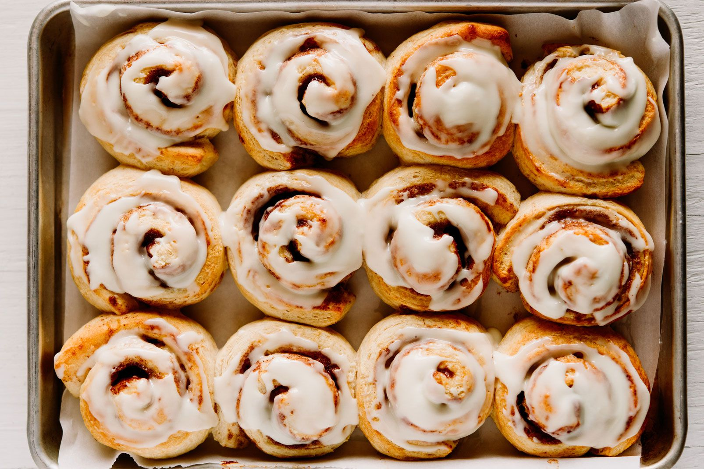

Overnight Cinnamon Rolls
- Recipe Summary
- Ingredient List
- Recipe Directions

By combining an overnight rise with a two-layer frosting, this recipe yields some of the most amazing cinnamon buns you've ever had.
Timings
- Prep1 hour
- Rise36 hours
- Cook30 min
- Total3 days
- Yields1 dozen cinnamon rolls
Ingredients
- 10 tablespoons butter, cut into 1-inch pieces
- 3/4 cup whole milk, warmed
- 4 large eggs
- 84g / 1/4 cup honey
- 540g / 4 1/2 cups all-purpose flour
- 10g / 2 1/4 teaspoons instant yeast
- 14g / 2 teaspoons salt
- 8 tablespoons butter, room temperature
- 4 ounces cream cheese, room temperature
- 1 teaspoon vanilla extract
- 1/4 teaspoon salt
- 114g / 1 cup confectioners' sugar
- 144g / ¾ cup light brown sugar
- 2 teaspoons cinnamon
- 1/4 teaspoon cloves
- 1/8 teaspoon salt
- 2 tablespoons unsalted butter, melted and cooled
Directions
- Grease a large bowl and set aside.
- Let butter come to room temperature
- Alternately, microwave on low setting until soft, about 1 minute. Set aside.
- Heat milk in microwave on high until 100F to 110F, about 1 minute. Put in a medium bowl.
- Add the eggs and honey to bowl with milk. Whisk to combine. Set aside.
- In the bowl of a stand mixer fitted with a paddle, mix the flour, yeast, and salt on low until combined, about 30 seconds.
- While running on low, add the milk-egg-honey mixture. Mix until combined, about 1 minute.
- Transfer to a lightly greased bowl. The dough will be sticky and you may need a spatula to scrape the dough into the bowl.
- Cover the bowl with plastic wrap and let rise for 30 minutes.
Rising and Folding (x4)
- Using your hands or a spatula, fold the dough up and over onto itself.
- Turn the bowl 20*, fold dough onto itself, and repeat until it's been folded 8 to 10 times.
- Re-cover the bowl with plastic and let rise for 30 minutes.
- Repeat the series of folding three more times, for a total of four times and a net rise of 2 hours.
- Tightly cover the bowl with plastic wrap adn refrigerate overnight or up to 72 hours.
Assembly
- Remove dough from fridge. On a generously floured work surface, knead the dough until smooth, about 3 minutes.
- Shape into a ball, dust with flour, and cover with a tea towel to let it come to room temperature, about 20-30 minutes.
Filling
- In a medium bowl, combine light brown sugar, cinnamon, cloves, and salt. Set aside.
- Roll dough out into a 16x12 inch rectangle. Using a pastry brush, coat one side with butter.
- Sprinkle reserved sugar-and spice mixture evenly on the dough. Using the long edge, roll the dough into a tight ball, pressing it to seal.
- Using a sharp knife, scissors, bench scraper, or thin string, cut the dough into 23 equal sized pieces. Place into prepared pan.
- Cover pan and place back in fridge to let me rise overnight or up to 18 hours
Baking
- The next morning, remove tray from the fridge and let come to room temperature, about 30 to 45 minutes.
- Adjust an oven rack to the middle position. Preheat the oven to 350F.
- Uncover tray and bake until rolls are golden brown, about 27 to 32 minutes.
- While the rolls are baking, prepare the icing.
- Transfer the pan to a wire rack and let cool for 5 minutes
- In a large bowl, beat butter and cream cheese with an electric hand mixer until smooth and creamy.
- Add the vanilla and salt to mix on low to combine.
- Add the confectioners' sugar and mix on low until combined.
- Scrape down the sides of the bowl and mix on medium until the icing is light and fluffy, 3 to 4 minutes.
- Using an offset spatula or table knife, apply a thin layer of the cream cheese icing to the rolls after they have cooled for 5 minutes, using about one-third of the mixture.
- Let the rolls for another 15 to 20 minutes. Top with the rest of the icing and serve.